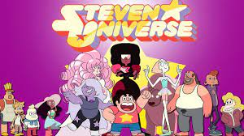

젬 괴물과 외계 문명의 위협에서 지구를 지키는 크리스탈 젬스(Crystal Gems)의 일원인 스티븐 쿼츠 유니버스를 주인공으로 스티븐의 주변에서 일어나는 일을 다룬다.
 주인공 일행은 거대한 체제에 대한 반역자라는 특수한 상황과 평화로운 나날의 대조 속에서 작품의 가장 큰 테마라고 할만한 개성과 다양성의 존중, 그리고 대화와 화합을 통해 이루어지는 사랑을 보여준다.